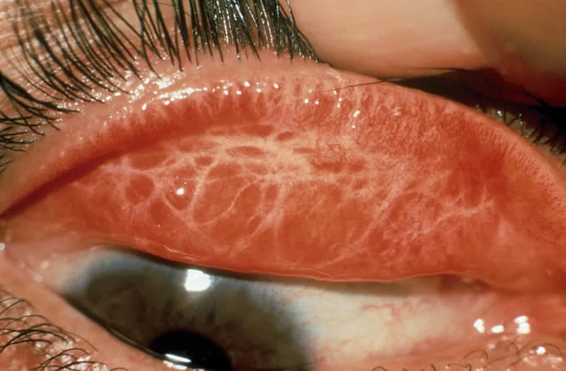
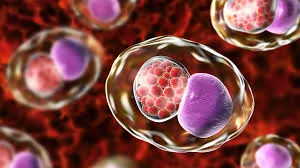
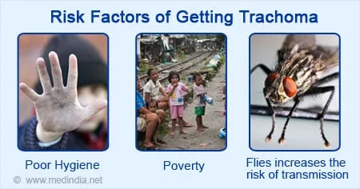
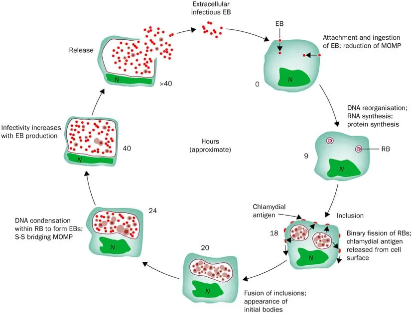
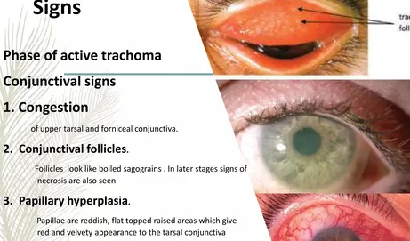
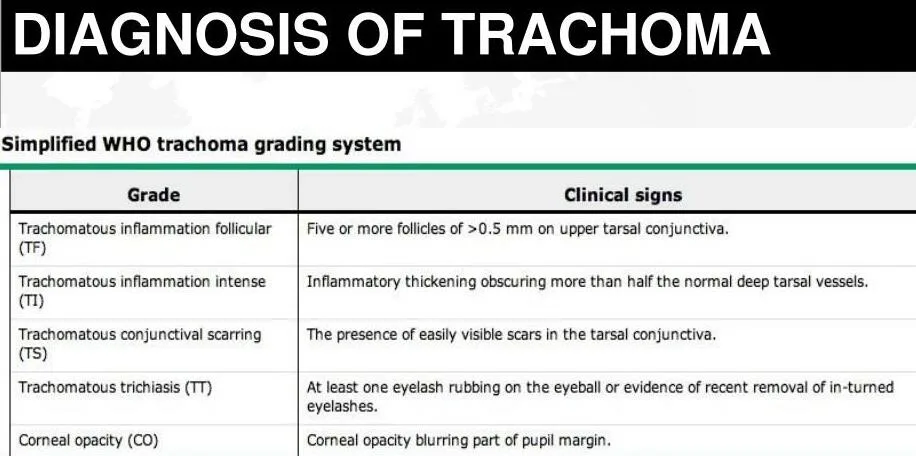
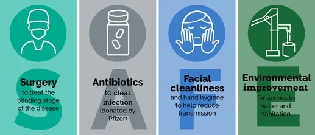

Expanded Nursing Uganda Explanation
Trachoma should be understood beyond a short definition. Link the concept to patient history, focused assessment, common risks, nursing priorities, documentation and evaluation of outcomes.
01 Overview
Trachoma is a contagious infection of the conjunctiva and cornea characterized by formation of granulation and scarring.
- Is a Greek word meaning "Roughness"
Trachoma is a chronic, infectious keratoconjunctivitis caused by repeated infection with specific serovars of Chlamydia trachomatis. It is the leading infectious cause of blindness worldwide.
Simply;
- Chronic: This indicates that the infection is persistent and can lead to long-term inflammation and progressive scarring over many years if left untreated. It's not a fleeting illness.
- Infectious: It is caused by a living pathogen and can be transmitted from person to person.
- Keratoconjunctivitis: This term indicates that the inflammation affects both the conjunctiva (the mucous membrane lining the eyelids and covering the front of the eye) and the cornea (the transparent front part of the eye that covers the iris, pupil, and anterior chamber). Involvement of the cornea is particularly significant as it can lead to vision impairment and blindness.
- Repeated infection: This is a crucial aspect. A single infection might resolve, but it's often repeated infections, especially in endemic areas with poor hygiene, that drive the progressive and blinding stages of the disease.
Incubation Period: 5- 21 days
The specific microorganism responsible for Trachoma is Chlamydia trachomatis .
More precisely, it is caused by specific serovars (serotypes) of Chlamydia trachomatis , primarily serovars A, B, Ba, and C . These serovars are distinct from those that cause sexually transmitted infections (STIs) and lymphogranuloma venereum (LGV), although they are all part of the same species.
Trachoma remains the world's leading infectious cause of blindness. While significant progress has been made, millions of people are still at risk of Trachoma blindness, and many more suffer from its painful, blinding complications. Trachoma is overwhelmingly a disease of poverty. It is endemic in rural, underserved communities in many of the poorest areas of the world.
- Africa: Sub-Saharan Africa bears the greatest burden, with the majority of countries reporting endemic Trachoma.
- Middle East, Asia, and Latin America: Pockets of endemicity also exist in parts of the Middle East, Asia (e.g., India, Nepal, Myanmar, China), and some regions of Latin America and indigenous communities in Australia.
Decline: Due to concerted global efforts (particularly the WHO SAFE strategy), the global burden has been significantly reduced over the past few decades. Many countries have eliminated Trachoma as a public health problem, but vigilance is important.
The transmission of Chlamydia trachomatis and the progression of Trachoma are intimately linked to a complex interplay of social, environmental, and economic factors, often summarized as "the five F's":
- Flies (Eye-seeking flies, Musca sorbens): Mechanism: These flies feed on ocular and nasal secretions and are highly efficient mechanical vectors for transmitting Chlamydia trachomatis from infected individuals to others, especially children.
- Environmental Link: Fly populations thrive in unhygienic conditions, especially where human and animal waste is abundant and poorly managed.
- Faces (Poor facial cleanliness): Mechanism: Visible ocular and nasal discharge in children is a strong indicator of active infection and a major source of transmission. When faces are not regularly washed, these secretions persist, increasing the likelihood of direct contact transmission and attracting flies.
- Social Link: Lack of access to water, soap, and culturally appropriate hygiene practices contribute to poor facial cleanliness.
- Fingers (Poor personal hygiene): Mechanism: Contaminated fingers (of infected individuals or caregivers) can directly transfer ocular secretions to their own or others' eyes.
- Social Link: Inadequate handwashing practices, especially after contact with eyes or children, facilitate spread.
- Fomites (Contaminated objects): Mechanism: Shared towels, bed linen, clothing, and other objects that come into contact with ocular secretions can harbor the bacteria and act as indirect vehicles for transmission.
- Social Link: Overcrowding and sharing of household items, common in impoverished settings, increase fomite transmission.
- Filth (Poor sanitation and hygiene environment): Mechanism: Lack of Access to Clean Water: Insufficient water for personal hygiene (washing hands, faces, clothes) and environmental cleaning.
- Lack of Adequate Sanitation: Open defecation or inadequate latrine use leads to fecal contamination of the environment, which promotes fly breeding.
- Overcrowding: Increases close contact between individuals, facilitating direct transmission and raising the infectious load in a community.
- Poverty: Underpins all these factors, limiting access to resources, education, and infrastructure necessary for good hygiene and sanitation.
The pathophysiology of Trachoma describes the precise way Chlamydia trachomatis infects ocular tissues, the body's response to this infection, and how this interaction ultimately leads to the blinding complications.
- Entry of Chlamydia trachomatis (Elementary Bodies): Infectious elementary bodies (EBs) of C. trachomatis (serovars A, B, Ba, C) come into contact with the conjunctival epithelial cells, typically of the upper tarsal conjunctiva.
- Transmission occurs primarily through direct contact with ocular/nasal secretions, contaminated fomites, or eye-seeking flies.
- Infection of Epithelial Cells: EBs are endocytosed by conjunctival epithelial cells.
- Inside the host cell, EBs transform into metabolically active reticulate bodies (RBs) within a membrane-bound vacuole called an "inclusion."
- RBs replicate extensively, forming new EBs, which are then released when the host cell lyses, ready to infect new cells.
- Acute Inflammatory Response (Trachomatous Inflammation: Follicular, TF; Trachomatous Inflammation: Intense, TI): The host immune system recognizes the C. trachomatis infection, leading to an acute inflammatory response.
- Follicle Formation (TF): This is a hallmark sign. Sub-epithelial lymphoid follicles (small, pale, raised lesions) form, particularly on the upper tarsal conjunctiva. These are aggregations of lymphocytes (B and T cells) and macrophages, indicating a cell-mediated immune response.
- Papillary Hypertrophy: The conjunctival epithelium also undergoes papillary hypertrophy, characterized by small, vascularized mounds.
- Diffuse Infiltrate (TI): In more severe or intense inflammation, the follicles become so numerous and confluent that they obscure the underlying tarsal blood vessels. There is also a diffuse inflammatory infiltrate of neutrophils, macrophages, plasma cells, and lymphocytes. This intense inflammation can also involve the cornea.
- Symptoms: This stage is characterized by conjunctival redness, irritation, itching, tearing, and mucopurulent discharge.
- Repeated Infections are Key: It is the repeated bouts of infection and subsequent chronic inflammation , rather than a single infection, that drive the destructive and blinding pathology of Trachoma.
- Fibrosis and Scarring: Persistent inflammation leads to a dysregulated wound healing response. Over time, the lymphoid follicles resolve, but the chronic inflammation stimulates fibroblasts to lay down collagen, resulting in fibrosis and scarring of the conjunctiva.
- Arlt's Line: A characteristic feature of Trachomatous Scarring (TS) is the formation of a white, fibrous band of scar tissue running horizontally across the upper tarsal conjunctiva, parallel to the eyelid margin. This is known as Arlt's line.
- Consequences of Scarring: Distortion of Tarsal Plate: The scarring causes the normally rigid upper tarsal plate (which gives the eyelid its shape and stability) to contract and deform. This contraction eventually leads to the inward turning of the eyelid margin.
- Trachomatous Trichiasis (TT): As the tarsal plate contracts and distorts, the eyelid margin turns inward (entropion), causing one or more eyelashes to rub against the globe (trichiasis).
- This constant abrasion of the cornea by the eyelashes is incredibly painful and leads to chronic irritation.
- Corneal Damage: Pannus: In earlier stages, the chronic inflammation and irritation can lead to vascularization of the cornea (pannus), where blood vessels grow from the limbus into the clear cornea.
- Corneal Ulceration and Abrasion: The abrasive action of the inturned eyelashes causes repeated micro-trauma to the corneal epithelium. This creates entry points for secondary bacterial infections, leading to corneal ulcers.
- Corneal Opacification (CO): Chronic inflammation, repeated infections, and persistent trauma from trichiasis result in irreversible scarring and clouding of the cornea. This corneal opacity blocks light from reaching the retina, leading to irreversible vision loss and blindness.
- Infection ( C. trachomatis in conjunctival cells)
- Acute Inflammation (follicles, papillae, diffuse infiltrate)
- Repeated Infections (in children)
- Chronic Inflammation
- Conjunctival Scarring (Arlt's line, distortion of tarsal plate)
- In-turning Eyelid Margin (entropion)
- Eyelashes Rubbing the Cornea (trichiasis)
- Corneal Damage (ulceration, scarring, pannus)
- Irreversible Corneal Opacification and Blindness.
The clinical manifestations of Trachoma vary depending on the stage and intensity of the disease. The World Health Organization (WHO) developed a simplified grading system to standardize the assessment of Trachoma, primarily focusing on signs observed in the upper tarsal conjunctiva of the eyelids.
The WHO grading system uses five signs to classify Trachoma, from active inflammatory disease to blinding sequelae. These are observed by everting the upper eyelid and examining the tarsal conjunctiva with a magnifying loupe.
- TF - Trachomatous Inflammation – Follicular: Description: Presence of at least five or more follicles (raised lymphatic nodules), each >= 0.5 mm in diameter, on the upper tarsal conjunctiva.
- Significance: Indicates active infection and inflammation, most commonly seen in children. The follicles appear as small, pale, elevated "bumps."
- Pathophysiology Link: Corresponds to the initial immune response to Chlamydia trachomatis infection.
- TI - Trachomatous Inflammation – Intense: Description: Marked inflammatory thickening of the upper tarsal conjunctiva that obscures more than half of the normal deep tarsal blood vessels. Follicles may also be present but the intense inflammation is the dominant feature.
- Significance: Represents a more severe, active inflammatory disease, often associated with high bacterial load and increased risk of scarring later.
- Pathophysiology Link: Indicative of a more robust and possibly repeated immune response leading to diffuse cellular infiltration.
- TS - Trachomatous Scarring: Description: Presence of clearly visible scars in the tarsal conjunctiva. These appear as white, fibrous bands. A characteristic sign is Arlt's line, a white or grayish linear scar running horizontally across the upper tarsal conjunctiva, parallel to the lid margin.
- Significance: Indicates chronic inflammation and past infection, which has led to irreversible fibrous changes. Once scarring develops, it does not regress.
- Pathophysiology Link: Result of chronic inflammation and dysregulated wound healing response, leading to collagen deposition and fibrosis.
- TT - Trachomatous Trichiasis: Description: At least one eyelash rubbing on the eyeball (cornea or conjunctiva). This can be current or evidence of recent removal of such lashes.
- Significance: This is the immediate precursor to irreversible blindness and causes immense pain and discomfort. It is typically a consequence of severe conjunctival scarring (TS) that distorts the eyelid.
- Pathophysiology Link: Direct consequence of tarsal plate distortion from scarring (TS), causing entropion and misdirection of eyelashes.
- CO - Corneal Opacity: Description: Clearly visible corneal opacification, at least partly obscuring the pupil. This appears as a whitish or grayish clouding of the normally clear cornea.
- Significance: Represents irreversible vision loss. This is the blinding stage of Trachoma.
- Pathophysiology Link: Final result of chronic corneal trauma from trichiasis, repeated infections, and inflammation, leading to permanent corneal scarring.
Patients with Trachoma may experience a variety of symptoms, which can vary in severity depending on the stage of the disease:
- Symptoms: Ocular discharge: Watery, mucoid, or mucopurulent (especially in bacterial co-infection).
- Irritation/Foreign body sensation: Feeling of grittiness or something in the eye.
- Itching: Especially pronounced in inflammatory stages.
- Tearing (epiphora): Excessive watering of the eyes.
- Photophobia: Sensitivity to light (less common than in advanced stages, but can occur).
- Mild pain or discomfort.
- Other Signs: Conjunctival redness/hyperemia: The whites of the eyes appear red.
- Eyelid swelling: Mild to moderate.
- Preauricular lymphadenopathy: Swollen lymph nodes in front of the ear (more common in acute phases, especially in children).
- Herbert's pits: Small depressions at the limbus (junction of cornea and sclera), which are remnants of limbal follicles that have resolved. These are a strong indicator of past Trachoma infection, even if active disease is no longer present.
- Corneal Pannus: Vascularization (blood vessels growing) into the superior cornea, often seen in chronic active Trachoma.
- Symptoms (due to Trichiasis and Corneal Opacity): Severe pain and discomfort: Constant rubbing of eyelashes on the cornea.
- Increased foreign body sensation.
- Photophobia: Often severe, making it difficult to be in daylight.
- Tearing (epiphora): Due to irritation.
- Vision loss/impairment: Gradually progressing to severe visual impairment or complete blindness, profoundly impacting daily life.
- Difficulty reading or performing fine tasks.
- Blepharospasm: Involuntary blinking or spasm of the eyelids due to pain.
- Other Signs (often in addition to the WHO grading signs): Corneal abrasions or ulceration: Visible defects on the corneal surface caused by trichiasis.
- Secondary bacterial keratitis: Bacterial infection of the damaged cornea.
- Corneal thinning or perforation (rare but possible).
- Dry eye: Can be exacerbated by scarring of conjunctival goblet cells.
The diagnosis of Trachoma relies primarily on clinical examination using the WHO simplified grading system.
The cornerstone of Trachoma diagnosis, especially in endemic field settings and for public health programs, is a trained examiner's clinical assessment using the WHO simplified grading system .
- Procedure: Eyelid Eversion: The examiner gently everts the upper eyelid, exposing the tarsal conjunctiva. This is typically done using a clean cotton swab or finger, with the patient looking downwards.
- Magnification: A magnifying loupe (typically 2.5x to 3.5x magnification) is used to carefully inspect the upper tarsal conjunctiva for the presence of the five key signs: TF, TI, TS, TT, CO.
- Assessment: Each eye is assessed independently. The presence or absence of each sign is noted, and the most severe sign observed dictates the diagnosis for that eye. For example, if a child has TF and TI, they are graded as TI because it represents more severe inflammation. If an adult has TS and TT, they are graded as TT.
- Training and Standardization: Critical for accurate and consistent diagnosis in field surveys. Examiners undergo rigorous training and standardization exercises to ensure inter-observer agreement.
While not routinely used for field diagnosis, laboratory methods provide definitive confirmation of Chlamydia trachomatis infection.
- Nucleic Acid Amplification Tests (NAATs): Method: PCR (Polymerase Chain Reaction) and other NAATs (e.g., LAMP - Loop-mediated Isothermal Amplification) are highly sensitive and specific tests that detect Chlamydia trachomatis DNA or RNA from conjunctival swabs.
- Advantages: Can detect very low levels of the bacterium, making it excellent for confirming infection, especially in surveillance efforts after mass drug administration or in low-prevalence settings.
- Disadvantages: Requires specialized equipment, trained personnel, and can be expensive and difficult to implement in remote field settings. Swab collection can also be uncomfortable.
- Enzyme Immunoassay (EIA) / Immunofluorescence (DFA): Method: These tests detect Chlamydia trachomatis antigens from conjunctival swabs or smears. Direct fluorescent antibody (DFA) test involves staining with fluorescently labeled antibodies specific to C. trachomatis .
- Advantages: Faster than culture, relatively specific.
- Disadvantages: Less sensitive than NAATs, particularly if the bacterial load is low. Requires a microscope and trained personnel for DFA.
- Culture: Method: Involves growing Chlamydia trachomatis in cell culture from conjunctival swabs.
- Advantages: Considered the "gold standard" for viability of the organism.
- Disadvantages: Very demanding, technically challenging, time-consuming, expensive, and not highly sensitive. Not practical for routine diagnosis.
- Serology: Method: Detects antibodies to Chlamydia trachomatis in blood samples.
- Advantages: Can indicate past or chronic infection.
- Disadvantages: Cannot distinguish between active and past infection, nor between ocular and genital C. trachomatis infections. Therefore, it is generally not useful for diagnosing active ocular Trachoma. More useful for epidemiological surveillance to assess exposure history in a population.
Nursing diagnoses provide a clinical judgment about individual, family, or community responses to actual or potential health problems or life processes.
- Risk for Infection (Transmission): Related to: Presence of Chlamydia trachomatis in ocular secretions, close living quarters, inadequate personal hygiene (facial cleanliness, handwashing), presence of eye-seeking flies.
- WHY?: High prevalence of active Trachoma in community, visible ocular discharge, shared personal items.
- Focus: Preventing spread within the household and community.
- Acute Pain: Related to: Ocular inflammation, conjunctival irritation from infection.
- As evidenced by: Patient verbalizing eye discomfort/grittiness/burning, eye rubbing, tearing, photophobia.
- Inadequate health Knowledge (of disease process and transmission): Related to: Lack of exposure to information regarding Trachoma, its causes, transmission, and preventive measures.
- As evidenced by: Continued poor hygiene practices, lack of understanding of medication regimen, recurrent infections within family/community.
- Ineffective Health Maintenance: Related to: Lack of access to clean water and sanitation facilities, limited financial resources, cultural practices, lack of community health education programs.
- As evidenced by: Persistent unhygienic environmental conditions, visible ocular/nasal discharge in children, high rates of active Trachoma.
- Chronic Pain: Related to: Corneal abrasion/ulceration from inturned eyelashes (trichiasis).
- As evidenced by: Patient verbalizing persistent eye pain, photophobia, tearing, blepharospasm, seeking relief by rubbing eyes.
- Focus: Managing chronic discomfort and preventing further corneal damage.
- Impaired Visual Sensory Perception: Related to: Corneal opacity, corneal scarring, recurrent corneal abrasions, and ulcerations.
- As evidenced by: Patient verbalizing difficulty seeing, squinting, bumping into objects, inability to perform daily tasks, diagnosed corneal opacity or trichiasis.
- Focus: Preserving existing vision and, where possible, restoring vision through intervention (e.g., surgery).
- Risk for Further Corneal Injury: Related to: Constant mechanical trauma from trichiasis, secondary bacterial infection, inadequate tear production.
- As evidenced by: Presence of trichiasis, corneal abrasions, history of recurrent eye infections.
- Focus: Preventing irreversible damage and blindness.
- Social Isolation/Disrupted Body Image: Related to: Visible signs of eye disease (e.g., severe scarring, corneal opacity), functional limitations due to impaired vision, stigma associated with blindness.
- As evidenced by: Patient withdrawing from social activities, verbalizing feelings of shame or embarrassment, expressing concern about appearance.
- Focus: Providing emotional support and facilitating social reintegration.
- Activity Intolerance (related to visual impairment): Related to: Reduced vision affecting ability to perform daily activities safely and efficiently.
- As evidenced by: Patient reporting fatigue during activities, needing assistance for mobility, expressing frustration with limitations.
- Focus: Promoting independence and adaptation to visual limitations.
- Risk for Compromised Community Coping: Related to: High prevalence of preventable blindness, limited access to healthcare resources, lack of effective public health programs, poverty.
- As evidenced by: Community members exhibiting resignation towards the disease, limited participation in health initiatives, ongoing transmission.
- Focus: Strengthening community resources and collective action.
- Risk for Delayed Development (in children): Related to: Impaired vision due to Trachoma affecting learning, play, and social interaction.
- As evidenced by: Children with visual impairment exhibiting difficulties in school, reduced engagement in age-appropriate activities.
- Focus: Early intervention and supportive environments.
Nurses play a role across all components of SAFE, from direct patient care to community health promotion and education.
For individuals with Trachomatous Trichiasis (TT), surgical correction is the only effective treatment to prevent further corneal damage and preserve vision.
- Identification and Referral: Screening: Conduct community-based and facility-based screenings to identify individuals with TT.
- Referral: Promptly refer patients diagnosed with TT to trained ophthalmic surgeons for eyelid surgery (e.g., bilamellar tarsal rotation).
- Pre-operative Counseling: Explain the surgical procedure, its benefits, potential risks, and expected outcomes to the patient and their family. Address fears and build trust.
- Post-operative Care and Education: Wound Care: Instruct patients on proper wound care, hygiene, and the importance of keeping the surgical site clean to prevent infection.
- Medication Administration: Teach about and administer prescribed post-operative eye drops (e.g., antibiotics, anti-inflammatories) and explain their purpose and correct instillation technique.
- Pain Management: Assess and manage post-operative pain using appropriate analgesics.
- Activity Restrictions: Advise on temporary activity restrictions to promote healing and prevent complications.
- Follow-up: Schedule and emphasize the importance of follow-up appointments to monitor healing and visual outcomes.
- Complication Monitoring: Educate patients/families on signs of complications (e.g., severe pain, redness, discharge, decreased vision) and when to seek immediate medical attention.
Antibiotics are crucial for treating active Chlamydia trachomatis infection and preventing its progression.
- Mass Drug Administration (MDA) / Targeted Treatment: Coordination and Participation: Participate in planning, organizing, and implementing MDA campaigns, where an entire community or specific age groups receive antibiotics (typically oral azithromycin).
- Drug Dispensing: Accurately dispense antibiotics, ensuring correct dosage, administration route, and understanding by the recipient or caregiver.
- Patient Education (MDA): Explain the purpose of the antibiotic, reinforce the importance of completing the full course, and discuss potential side effects. Emphasize that it's for the benefit of the whole community to reduce the bacterial reservoir.
- Targeted Treatment: For individual cases of active Trachoma outside of MDA, ensure appropriate antibiotic prescribing and patient education (e.g., topical tetracycline eye ointment for specific cases or oral azithromycin).
- Monitoring for Efficacy and Side Effects: Observation: Monitor patients for adherence to treatment and for any adverse drug reactions.
- Reporting: Report any significant side effects according to protocol.
Promoting clean faces, especially in children, is a primary strategy to reduce transmission.
- Health Education and Promotion: Individual/Family Counseling: Teach parents/caregivers about the importance of regular face washing, particularly for young children, using clean water and soap.
- School Health Programs: Conduct hygiene education sessions in schools, teaching children about personal hygiene and disease transmission.
- Community Workshops: Organize and facilitate community workshops on hygiene, linking clean faces to Trachoma prevention.
- Demonstrations: Show practical techniques for face washing.
- Resource Mobilization: Advocacy: Advocate for increased access to clean water sources (e.g., boreholes, protected wells) and soap within communities.
- Distribution: Facilitate distribution of soap or water containers if available and appropriate.
Environmental improvements address the underlying risk factors for Trachoma transmission, particularly sanitation and water access.
- Sanitation Promotion: Education: Educate communities on the link between open defecation, flies, and Trachoma transmission.
- Advocacy: Encourage the construction and consistent use of latrines, emphasizing their benefits for health and dignity.
- Community-Led Total Sanitation (CLTS): Participate in or support CLTS initiatives, empowering communities to recognize the problem of open defecation and collectively find solutions.
- Water Access and Management: Education: Teach about safe water storage and handling practices at the household level.
- Advocacy: Support initiatives to improve access to clean, potable water for domestic use and hygiene.
- Fly Control: Education: Inform communities about the role of flies in disease transmission and simple measures to reduce fly breeding sites (e.g., proper waste disposal, covering food, managing animal waste).
- Assessment: Continuously assess individuals and communities for active Trachoma, trichiasis, and risk factors.
- Documentation: Maintain accurate records of assessments, interventions, and patient outcomes.
- Referral: Ensure appropriate and timely referral to specialists (e.g., ophthalmologists, public health officials) when needed.
- Advocacy: Advocate for policies and resources that support Trachoma elimination efforts at local, regional, and national levels.
- Community Engagement: Build rapport and trust with community members, involving them in planning and implementing health interventions.
- Monitoring and Evaluation: Participate in monitoring the impact of interventions and evaluating the effectiveness of programs.
- Training: Train community health workers and volunteers in basic Trachoma screening and health education.
The World Health Organization (WHO) developed the SAFE strategy as a comprehensive, multi-faceted public health approach to control and ultimately eliminate Trachoma as a public health problem. Each letter in "SAFE" represents a core component, addressing different aspects of the disease's transmission and progression.
The SAFE strategy is a cornerstone of global efforts against neglected tropical diseases and has led to significant reductions in Trachoma prevalence worldwide. Nurses are pivotal in the implementation of all four components.
- Purpose: To manage the blinding complication of Trachoma (trichiasis) by correcting the inward-turning eyelashes, thereby preventing further corneal damage and restoring vision where possible.
- Mechanism: Surgical intervention, typically bilamellar tarsal rotation, is performed by trained ophthalmic personnel (ophthalmologists, ophthalmic nurses, or trained cataract surgeons).
- Key Interventions: Case Finding: Active identification of individuals with trichiasis in endemic communities through screening programs.
- Referral: Establishing efficient referral pathways from communities to surgical facilities.
- Surgical Provision: Performing high-quality, accessible surgery.
- Post-operative Care: Providing follow-up care and patient education to ensure good outcomes and prevent recurrence.
- Nursing Role: Nurses are often involved in case finding (screening), pre-operative counseling, patient education, post-operative wound care, administering eye drops, and follow-up care. They also help identify and refer patients to surgeons.
- Purpose: To treat active Chlamydia trachomatis infection, reduce the community reservoir of infection, and interrupt transmission.
- Mechanism: Mass Drug Administration (MDA) of oral azithromycin is the preferred strategy. In specific cases, topical tetracycline eye ointment may be used. MDA involves treating entire communities (or specific high-risk age groups, like children) with a single dose of azithromycin, typically annually for several years.
- Key Interventions: Mapping: Identifying communities where the prevalence of active Trachoma (TF in children aged 1-9) exceeds the WHO-defined threshold (e.g., >= 5% for TF).
- Mass Drug Administration (MDA): Distributing antibiotics to the entire at-risk population or specified target groups.
- Coverage: Ensuring high treatment coverage (ideally >= 80%) to effectively reduce the community bacterial load.
- Nursing Role: Nurses are instrumental in planning, organizing, and implementing MDA campaigns, including drug logistics, community mobilization, dispensing medications, and educating the community on the importance of taking the full dose and potential side effects.
- Purpose: To reduce the transmission of Chlamydia trachomatis by decreasing contact with ocular and nasal discharges. Clean faces are less likely to attract eye-seeking flies, and direct contact transmission is reduced.
- Mechanism: Behavioral change communication focusing on improved personal hygiene, particularly regular face washing, especially in children.
- Key Interventions: Health Education: Promoting daily face washing (especially children's faces) using clean water and soap.
- Hygiene Promotion: Emphasizing handwashing, especially after contact with eyes or children.
- Community Engagement: Involving community leaders, school teachers, and parents in promoting these practices.
- Nursing Role: Nurses lead health education initiatives at individual, family, and community levels. They conduct demonstrations, run school health programs, and advocate for access to water and soap.
- Purpose: To improve household and community environments to reduce C. trachomatis transmission by decreasing fly populations and improving overall sanitation and access to clean water.
- Mechanism: Addressing the underlying socioeconomic determinants of Trachoma.
- Key Interventions: Improved Water Access: Promoting access to safe, clean water for drinking, washing, and personal hygiene.
- Improved Sanitation: Encouraging the construction and consistent use of latrines/toilets and discouraging open defecation, which reduces fly breeding sites.
- Waste Management: Proper disposal of human and animal waste.
- Fly Control: Simple measures to reduce fly populations.
- Nursing Role: Nurses act as advocates for community development, participate in campaigns for improved water and sanitation facilities, and educate communities on the link between environmental hygiene and health outcomes. They may support Community-Led Total Sanitation (CLTS) initiatives.
It is crucial to understand that the SAFE strategy is most effective when all four components are implemented synergistically.
- Surgery addresses the consequences of past infection.
- Antibiotics tackle the active infection and reduce the reservoir.
- Facial Cleanliness and Environmental Improvement prevent new infections and re-infections by breaking the chain of transmission.
Trachoma is more than just an eye disease; it has profound public health, social, and economic implications, particularly in the impoverished communities it affects.
- Leading Cause of Preventable Blindness: Trachoma remains the leading infectious cause of blindness globally. This has immense human cost, leading to suffering, disability, and reduced quality of life for millions.
02 Nursing Uganda Clinical Lens
Use Trachoma as a practical nursing topic, not only a memorized definition. Study medicines through indication, safety checks, expected response, adverse effects and patient teaching.
- What to understand first: define trachoma, identify the normal or expected pattern, then explain what changes when the patient is unwell.
- Why it matters in care: the nurse must recognize risk early, explain findings clearly, document accurately and know when to escalate.
- How to revise it: connect each point to assessment, nursing diagnosis or care problem, intervention, rationale and evaluation.
03 Assessment Guide
- Diagnosis or reason for the medicine, allergies, pregnancy status and previous reactions.
- Current medicines, herbal products, renal or liver risk and baseline observations.
- Dose, route, timing, dilution, expiry date and documentation requirements.
04 Nursing Priorities, Rationales and Outcomes
- Apply the rights of medication administration and facility policy.
- Monitor therapeutic response and class-specific adverse effects.
- Educate the patient on purpose, timing, missed doses, warning symptoms and adherence.
The rationale for these priorities is patient safety: nursing actions should prevent deterioration, reduce discomfort, support recovery and create clear evidence for the next caregiver.
- Expected outcome: The medicine produces the intended effect without preventable harm, and administration is accurately documented.
05 Patient Teaching and Revision Check
- Explain trachoma in simple language the patient or caregiver can repeat back.
- Teach warning signs, medicine or follow-up instructions, hygiene or lifestyle points where relevant.
- For exams, prepare a short answer using: definition, causes or risk factors, signs, assessment, management, complications and prevention.
- For ward practice, document baseline findings, actions taken, patient response and the plan for review.
Illustrations and Diagrams (17)








9 more diagrams available, open the lesson for full illustrations.
Related Video Lectures
Watch nursing lecture videos on YouTube for this topic. Opens in a new tab.
Watch on YouTubeExternal link: YouTube may use its own cookies and terms. Nursing Uganda is not affiliated with YouTube.